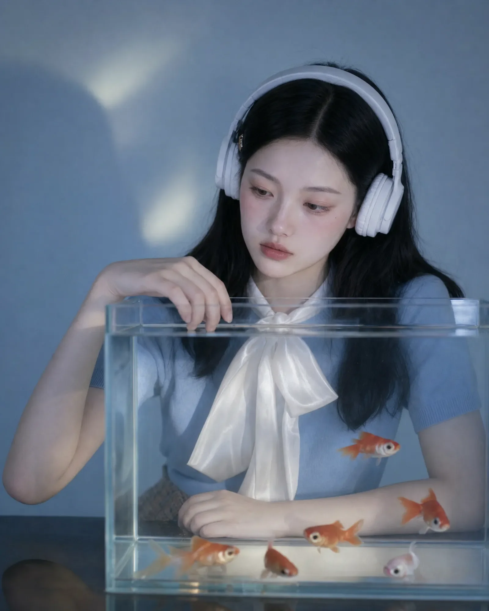
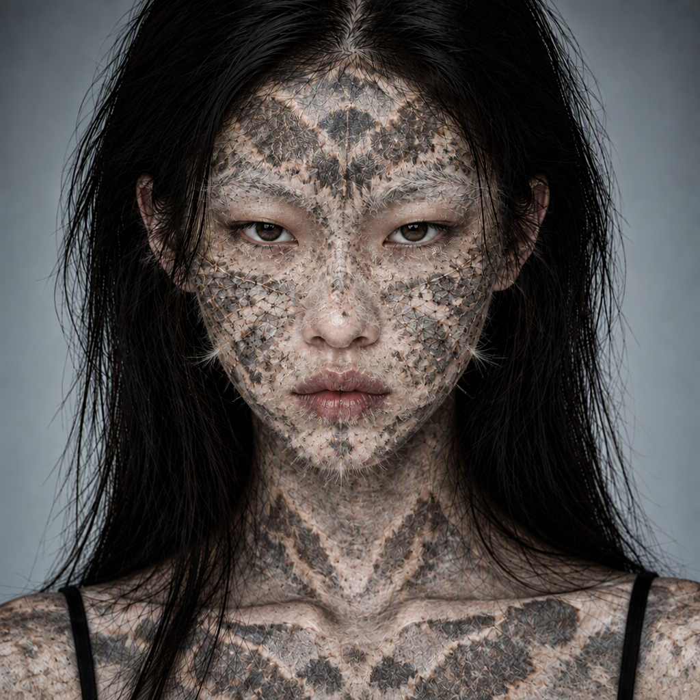
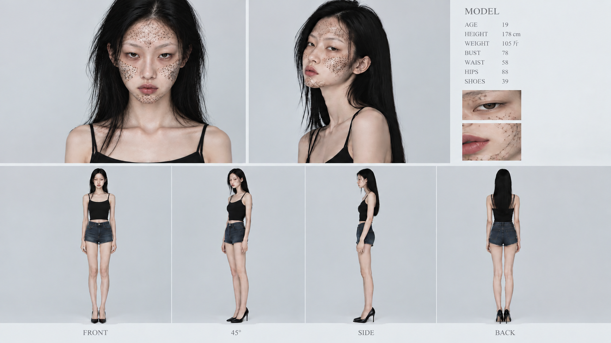
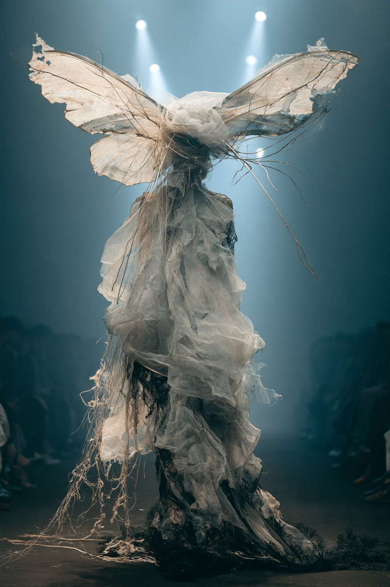
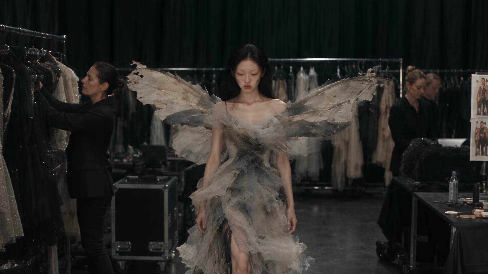

01 · AI film / award-winning work
房间里的金鱼
第二届海浪 AI 电影黑客松获奖作品，入选小红书「天才导演招募计划 2.0」。通过 AI 技术创作短片，探索人与数字世界的关系，用一条关于孤独与连接的影像叙事开始。
我的职责：编剧 · 概念设计 · 视频生成
- 职责编剧 · 概念设计
- 制作视频生成
- 荣誉海浪 AI 电影黑客松获奖
Personal portfolio · 2026
AIGC visual director, fashion creator and storyteller building worlds with AI.
View my work Scroll to explore从 AI 影像、平台项目到产品设计，我把研究、叙事和视觉表达放进同一个创作过程。
Selected projects · 01—06
这些项目来自 AI 影像、平台内容、公开分享和产品视觉实践。点击上面的作品卡片，可以直接跳到对应项目。

01 · AI film / award-winning work
第二届海浪 AI 电影黑客松获奖作品，入选小红书「天才导演招募计划 2.0」。通过 AI 技术创作短片，探索人与数字世界的关系，用一条关于孤独与连接的影像叙事开始。
我的职责：编剧 · 概念设计 · 视频生成
02 · Talk / content strategy
受邀分享《AI 时代的个人复利公式：多元兴趣 × AIGC × 内容杠杆》，把个人经验、视觉创作和内容实践整理成一场关于长期积累的分享。
03 · AI film / ARENAPEAK finalist
《虫我》是 ARENAPEAK 亚洲巅峰赛决赛入围作品。以蛾、光和身体变化为线索，建立一个介于时尚影像、角色设定与梦境叙事之间的视觉档案。
我的职责：编剧 · 概念设计 · 视频生成 · 后期配乐
04 · Platform selection / creator identity
《房间里的金鱼》入选小红书「天才导演招募计划 2.0」。这不只是一次作品展示，也让我把 AI 导演、影像创作和平台内容表达放在同一个创作者身份里。
05 · AI film / character world
AI 影像作品《大话金陵》。以南京城市文化为叙事背景，延展出海报、角色和多视角设定，让一部影像先从人物和视觉资产开始长出自己的世界。
我的职责：导演 · 演员 · 后期配乐
06 · Product design / visual concept
以苹果型香味扩散器为对象，探索产品形态、桌面使用场景和传播视觉之间的关系，让一个日常物件拥有更完整的产品世界。
Moth Within · visual archive
从你补充的素材中选取概念、角色、服装和视频帧，作为项目过程的一部分保留在页面里。




How I can help
如果你正在做一个品牌、一个角色、一支片子，或者只是有一个还没有被说清楚的想法，我们可以从一次对话开始。
从 moodboard、关键词到完整的画面语气，帮你找到项目最有辨识度的入口。
短片、角色动作、产品场景和社交媒体内容，让静态概念拥有时间和情绪。
把视觉资产整理成可持续使用的系统，而不是只完成一次性的漂亮图片。
结合研究、叙事和审美，把人与地方、传统与当代之间的关系讲得更有温度。
A small archive
这里会记录我对 AI、时尚、城市和视觉文化的观察。作品是结果，过程才是持续发生的部分。
关于人物、动作和第一印象的几条笔记。
我如何用材质、配饰和姿态建立一个人物。
视觉策略不只是解释，也是在创造一次相遇。
About Riki
央美 × 法国高商。我的工作横跨 AIGC 视觉创作、品牌策略、时尚与文化项目，用审美把复杂的想法变成可以被看见、被感受、被记住的体验。
靳睿琦 Riki
AIGC Visual Director
Fashion Creator
Creative Researcher
Let’s create something together.